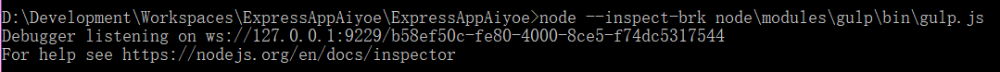
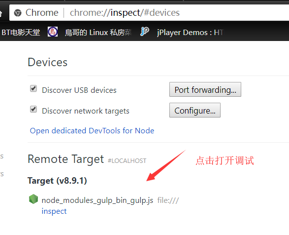

nodejs之旅(3)-gulp及调试
gulp通过任务的形式来完成前端的构建，如何调试？
gulpfile.js中任务的调试
环境:
nodejs:v8.9.1
nodejs版本不一样处理方式也不一样！(找对应版本的命令)
nodejs提供了调试选项--inspect,按照gulp的官方文档，我们调用gulp直接使用gulp命令即可！
gulp
其实这个命令最终运行的是当前项目下的node_modules\gulp\bin\gulp.js文件，因此我们可以直接使用nodejs的调试命令，启动调试
>node --inspect-brk node\modules\gulp\bin\gulp.js
如图：

然后打开chrome浏览器输入chrome://inspect或about://inspect打开调试窗口即可！

gulp任务及回调
通过定义任务的方式来完成想要的功能，一般会写出如下代码！
//方式1
var gulp = require('gulp');
var del = require('del');
gulp.task('clean', function (cb) {
del(['dist/*', '!{dist/node_modules/**,dist/node_modules}', '!{dist/upload/**,dist/upload}']).then((paths, err) => {
console.log(paths)
if (err) return cb(err);
debugger;
cb();//run task finish! 或者 return promise
});
})
task任务必须返回Promise对象或者一个Stream对象，这样gulp才能通过回调函数的形式，知道当前任务的执行情况。
或者调用一下回调函数上例中的cb，cb会调用gulp->runTask->finish函数来标识任务已经完成！
//方式2
var gulp = require('gulp');
var del = require('del');
gulp.task('clean', function () {
return del(['dist/*', '!{dist/node_modules/**,dist/node_modules}', '!{dist/upload/**,dist/upload}'])
})
说明：方式1或方式2任选一种即可，不可又return promise又cb()，这样会调用两次finish函数并且报错！